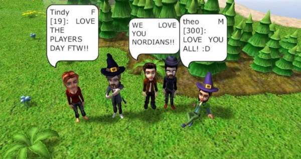

Instead of war and fighting the game was about collecting vegetables and other things that you could trade or give away to friends. Or you could simply skip collecting things altogether and just hang out with friends.
As the years passed more and more players joined the game. There were people of all ages from countries all over the world. The players threw lots of parties, races, competitions and weddings in the game.
But all good things come to an end and so does this story. After almost 7 years it was time to say good bye and shut down the game for good.
The name of the game was Nord, and the names of us who built it are Theo, Henrik, Toddy and Markus.
/admins
----------------------------------------------------------------------------------------------------
2007 - 2014
Rest in Peace
----------------------------------------------------------------------------------------------------
”För 5 och ett halvt år sedan skapade jag mitt konto i Nord. Sedan dess har spelet alltid funnits där som en trygg och härlig plats att hänga på. Jag har träffat många nya internetvänner här och några av dem kommer jag hålla kontakten med även efter att Nord lagts ner. Tack till alla som spelat Nord och gjort det till det bästa onlinespelet som någonsin funnits!”
"Har vart kul med att se nords utvecklas genom åren. Spelet själv nord sen beta versionen. Sen är det extra roligt när man får in flera saker i spelet, som man har själv get förlag på som exmpel delfinen.
Några saker som jag har gillat med spelet, är att man kan hitta på vad som helst. Inte bara att levla. Man har kunnat bygga och vart med på olika tävlingar.
En av sakerna som blivit extra roligt är att man har kunnat göra musikvideos och små korta egena filmer. Tillsamans med andra nordare som hjälper varandra med att göra sinna youtube videos.
Nord var också mer än bara ett spel för mig. Träffat i nord en hel del perssoner som jag även skulle kunna tänka mig hålla kontakten med nu när nord stängs ner.”
Ett stort tack till Nords administratörer som gjorde det möjligt för mig och många andra att träffa nya, goda människor här. Utan Nord hade det aldrig blivit möjligt.
"Tack för alla som lagt ner tid för att få en fin stämning i spelet, tror att alla uppskattar det. Detta spelet kommer man alltid att minnas, eftersom man har fått nya vänner här. Beep.”
"Ett spel som varit vardag för vissa,
Ett spel som varit del av en uppväxt för andra. Ett spel som varit kärnan till storartade stunder, krig/bråk, vänskap och kärlek. Ett spel som varit samlingsplats för en bunte utav världens förnämsta människor. Ett spel som går i graven. En epok som går i graven. Ett spel som jag vill tacka för. En tid som jag vill tacka för. Tack admins, kollegor, vänner och alla andra. God jul och gott nytt år 2014."
"Tack alla nordare. Nord har betyt mycket för mig, i det här spelet har jag lärt känna så underbara personer vissa har hjälpt mig att med svåra problem som jag haft irl, jag kunde prata med dem när jag inte kunde pratade med mamma. de gav mig ett nytt ljus. Jag kan inte tacka er nog Fridami, Angora och Diddi, Tack! från er sms12”
"Tackcitat... Jag vet inte vad jag skulle gjort utan Nord. Jag började runt 2009 på min första gubbe och blev helt fast och har haft ett stort antal gubbar sedan dess. Jag har lärt känna en massa fantastiska personer som jag träffat genom genom Nord. Jag vill tacka alla som spelar Nord så sjukt mycket för att ni har skapat en så fantastisk stämmning i spelet och ett extra stort tack till alla admins som har orkat hålla igång Nord så här länge.
Hoppas alla har en trevlig tid utanför Nord/ ShoppingLover, Nektar02, elin544, elin01 och blablabla :*”
"Tack för den tid som jag har haft här på nord. 3,5 år, jag började 2010 i september. När jag började på nord så öppnades en helt fantastisk värld för mig. Jag har träffat mängder med underbara kompisar här.
Jag vill framför allt tacka Nords administratörer som har gjort det här roliga och speciella spel som jag har älskat och några spelare:
Panther och Angora, för att ni har hjälpt mig och en mängd andra nordare att levla och varit bra vänner.
Min bästa vän: Alvinpalv. Nord skulle inte vara lika kul för mig om jag inte hade träffat dig.
Och alla andra vänner.
Kommer aldrig glömma varken spelet eller ni som har spelat det.
Tack allihopa, många, stora kramar från Lillan77. Den som aldrig glömmer.”